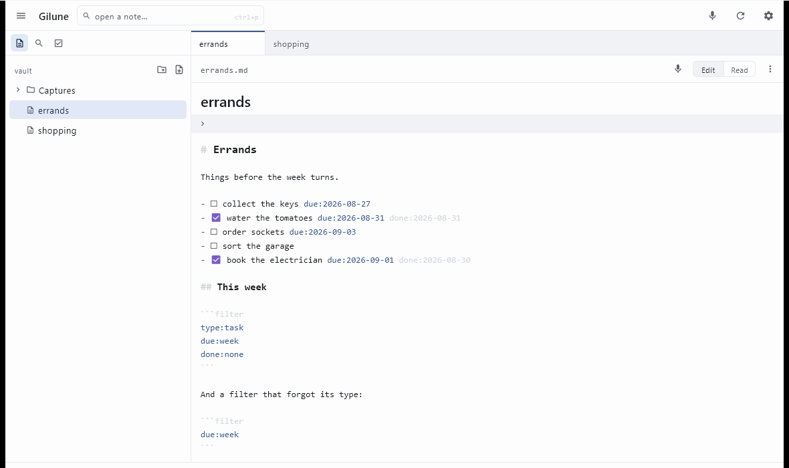

Gilune
Capture a thought. Keep it in plain files.
Gilune is a notebook for the things you want to remember. You write or you speak, and what you keep is saved as an ordinary Markdown file in a folder you chose — readable today, readable in ten years, and readable by any other editor you care to point at it.
Everything runs on your own machine. There is no account to make, nothing to sign in to, and nothing is sent anywhere unless you ask for it. Speech is transcribed locally. Features arrive as plugins you can switch off or remove, and removing one takes away its buttons and never touches a word you wrote. The name comes from the globe gilia, a flower whose many small blooms cluster into a single head — small fragments of thought gathered into something whole.

What it does
Capture, by typing or by speaking
Press Ctrl + N and a new note opens with the title selected, ready to be named. Or press the microphone in the top bar, talk, and press it again: Gilune saves the recording, transcribes it on your machine, and opens the note it made. Inside a note, a second microphone dictates straight at your cursor. The recording is always saved first and kept as an ordinary audio file beside the note, so a transcription that goes wrong costs you nothing. On the desktop you can transcribe any recording again, turn an audio file from elsewhere into a note, and, with the optional speaker labels plugin, have a conversation come back split by who was speaking.
More about capture and voice →
Your notes are plain files
A note is a Markdown file. Gilune styles it as you type — headings, emphasis, links, checkboxes — but the buffer you edit is always the real text of the file, so what you see and what is on disk never drift apart. There is no save button; your work is written as you go. Keep the folder in Obsidian, in a text editor, in version control, or in all three at once.

Tasks, with dates you can type in words
Any checkbox is a task. To give one a due date, type / on the task
line, press Enter, and type something like tomorrow or
friday. Gilune writes the real date into the line — a plain
due:2026-09-04 that any other editor can read — and colours it so
your eye can find it. Tick a task and the day you finished it is stamped alongside.

An agenda that reads your own notes
The agenda gathers every open task in the vault into four short lists: overdue, today, the next seven days, and anything with no date at all. Ticked tasks drop out of it. Nothing is stored twice — each row is a line that already lives in one of your notes, and clicking it opens that note. If you would rather not have it, one switch takes the whole panel away.

Search that understands what you are looking for
Press Ctrl + Shift + F and type. Bare words all have to match;
quotes hold a phrase together; a leading - excludes. Beyond that there
is a small set of keywords — file:, path:,
content:, and, for tasks, due:, done: and
is:. A query like type:task due:overdue is:open says
exactly what it means. Mistype a keyword and it is simply treated as a word to look
for, so a typo never silently empties your results.

Live lists inside a note
Write a fenced code block labelled filter, put a query inside it,
and the note shows a live list of everything that matches. It is the same query
language as the search panel, one filter per line. To anyone else — Obsidian,
Notepad, GitHub — it is a perfectly ordinary code block, so the note stays legible
wherever it is opened.

Tabs and split panes
Notes open in tabs. Ctrl + \ puts the current note in a pane of its own beside the one you are in, so you can write in one and read in the other. Drag the divider to rebalance them, drag a tab from one pane to the other, and collapse the sidebar with Ctrl + Shift + B when you want the words and nothing else. The layout is remembered per vault.

More about tabs, panes and shortcuts →
Plugins you can trust
Transcription, tasks — these are plugins, and each has its own settings screen listing what it may do, what it listens to and what it adds to the app. Anything it wants that reaches outside your machine has to be allowed by you, by name, before it happens; nothing downloads on a first launch. Switch a plugin off and its buttons and menus go. Remove it and its settings and permissions go with it — everything it ever wrote into your vault stays exactly where it is.

Where the project is today
Windows desktop is the app that exists and works today: writing, voice capture with local transcription, tasks, search, tabs and split panes.
An Android app is in development and not ready to use.
Syncing between devices works: your devices pair with each other and exchange what you have written directly over your own network. It is the newest part of Gilune and is still being proven on real networks, so keep backing your vault up the way you would any other folder. More about sync →
There are no downloads yet. Getting Gilune today means building it from the repository, which is what the next section is for.
Getting Gilune
There is no installer to download at this stage of the project. To run Gilune on
Windows you will need JDK 17 or newer, a Rust
toolchain (1.98 or newer), and — because the transcription engine compiles
from C++ — LLVM and CMake, most easily installed with
scoop install llvm cmake, with LIBCLANG_PATH pointing at
the LLVM bin folder.
From a clone of the repository:
cd kernel
cargo build --release -p gilune-ffi --features whisper
cargo run -p gilune-ffi --bin uniffi-bindgen -- generate ^
--library target/release/gilune_ffi.dll --language kotlin ^
--out-dir ../app/composeApp/src/desktopMain/generated
copy target\release\gilune_ffi.dll ..\app\composeApp\resources\windows-x64\
cd ../app
gradlew :composeApp:createReleaseDistributableThe app is then at
app/composeApp/build/compose/binaries/main-release/app/Gilune/Gilune.exe.
On first run, choose a folder for your vault in Settings — an empty one is fine.
If you want voice notes, the transcription plugin needs a speech model of about 75 MiB. It is not fetched on first launch: open Settings ▸ Plugins, open the transcription plugin, and allow it network access. Only then does the model download, once, and everything after that happens offline.
The guide
- NotesCreating, editing, Markdown, checkboxes, properties and attachments.
- Capture & voiceNotes from speech, dictating at the cursor, recordings again, speaker labels, and the language setting.
- TasksDue dates from the
/menu, the agenda, and filter blocks. - PeoplePerson pages, mentions, custom connections and reviewed renames.
- SearchThe complete query language, with an example for every keyword.
- WorkspaceTabs, split panes, the sidebar, and every keyboard shortcut.
- SyncPairing your devices, what travels between them, and what to do when a network gets in the way.
- PluginsWhat they are, what they may do, and what happens when you remove one.